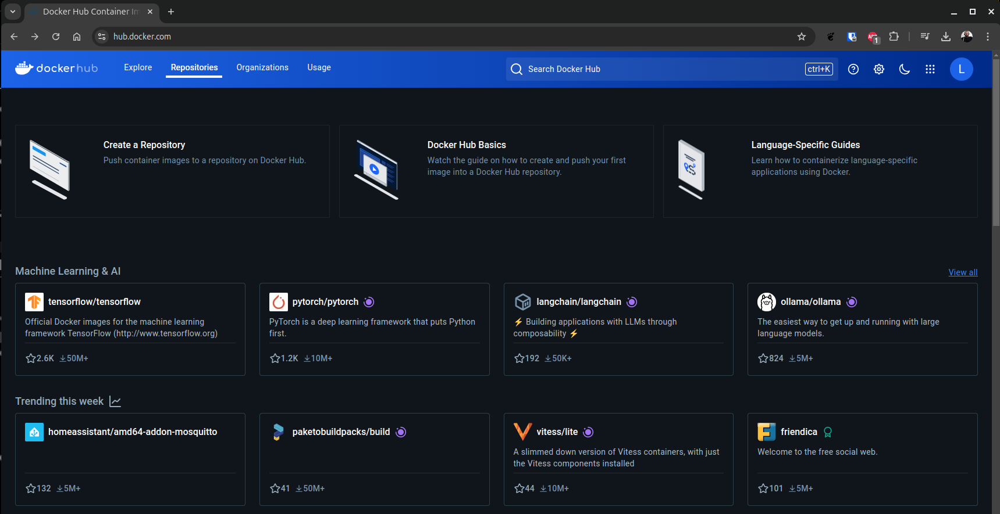
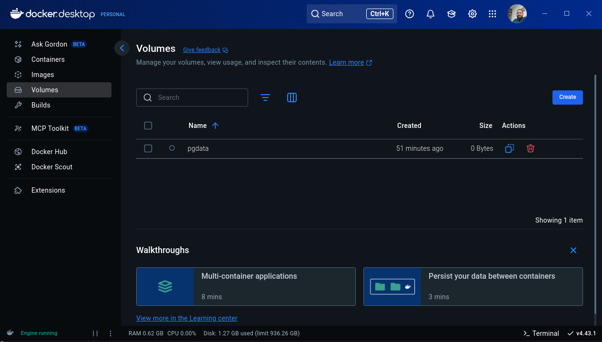
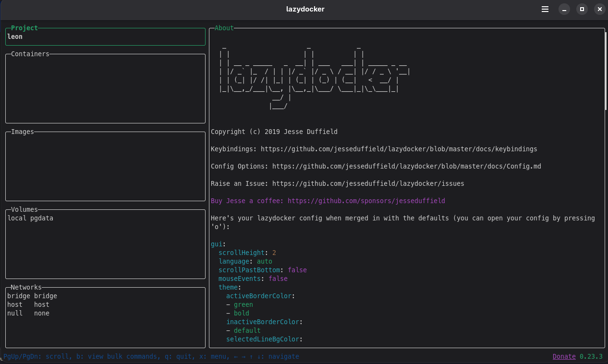

Docker

Docker é uma plataforma open source que automatiza a implantação, escalabilidade e execução de aplicações dentro de contêineres.
Contêineres são ambientes isolados e portáteis que contêm tudo o que uma aplicação precisa para funcionar, incluindo bibliotecas, dependências e configurações.
Arquitetura
A arquitetura do docker pode ser dividida em três componentes principais mostrados na imagem abaixo.

Arquitetura
O cliente é o ponto de interação do usuário com o Docker, geralmente por meio da linha de comando. Esses comandos são enviados ao Docker Daemon via API, os comandos são convertidos para chamadas da api.
- docker run: Executa um container com base em uma imagem.
- docker build: Cria uma nova imagem a partir de um Dockerfile.
- docker pull: Baixa uma imagem de um repositório (Registry).
O docker host é o ambiente de execução do docker sendo o Daemon um serviço que gerência as imagens e containers. Quando uma imagem é "executada", o Docker a transforma em um container em uma instância isolada para execução.
O Docker Registry é um repositório de imagens podendo ser público ou privado
Instalação
O Docker está disponível para vários SO's, entre os principais sistemas operacionais da atualidade o Docker fornece uma forma de instalação. Para linux as principais distros possuem o repositório oficial disponível para instalação.
Primeiro Container
Execute o seguinte comando:
Docker Hub
Docker Hub é um registro de containers (container registry) hospedado pela própria Docker Inc. É o ponto de partida padrão quando você executa comandos como docker pull ou docker run.

| Funcionalidade | Descrição |
|---|---|
| Imagens oficiais | Repositórios mantidos por empresas ou pela própria Docker (ex: nginx, mysql) |
| Repositórios públicos | Qualquer usuário pode criar e compartilhar uma imagem abertamente. |
| Repositórios privados | Para projetos privados ou internos. Contas gratuitas têm limite. |
| Tags e versões | Cada imagem pode ter várias versões (latest, v1.0, etc.) |
| Automated Builds | Integra com GitHub/GitLab para build automático de imagens. |
| Webhooks | Aciona ações externas após o push de uma imagem. |
Programa ASCII text
Para exemplificar vamos criar um programa que converte texto para ASCII text, usando o figlet. Crie um arquivo chamado ascii.sh
#!/bin/bash
TEXTO=("Arise, arise, riders of Rohan!
Fell deeds awake, fire and slaughter!
Spear shall be shaken, shield be splintered!
A sword-day, a red day, ere the sun rises!
Ride now, ride now, ride to Gondor!")
figlet -w 200 -f big "$TEXTO"
Esse é nosso programa, um arquivo simples .sh que usa o programa figlet. Para executar localmente é necessário instalar esse programa manualmente. Pensando no contexto de utilização, um programa pode conter diversas bibliotecas e configurações para seu funcionamento.
Para isso criamos um Dockerfile.
Dockerfile
O Dockerfile é o ponto de entrada de um container docker, é onde a imagem e toda a lógica do container são definidos. Neste arquivo definimos as etapas para criação de um container.
- FROM: define a imagem base do container.
- WORKDIR: define o diretório de trabalho dentro do container.
- COPY: copia arquivos do sistema de arquivos host para o sistema de arquivos do container.
- RUN: executa comandos no container durante o processo de build.
- EXPOSE: informa qual porta o serviço do container vai escutar
- CMD: define o comando padrão que será executado quando o contêiner for iniciado. Diferente de RUN, que é executado durante o build, CMD é executado quando o contêiner já está rodando.
FROM ubuntu:latest
RUN apt update && apt install -y figlet wget
RUN wget -P /usr/share/figlet http://www.jave.de/figlet/fonts/details/big.flf
COPY ascii.sh /ascii.sh
RUN chmod +x /ascii.sh
CMD ["/ascii.sh"]
Com esse arquivo pronto vamos montar essa imagem.
Build image
O comando docker build é usado para criar uma imagem Docker a partir de um Dockerfile. A imagem é uma representação em camadas do sistema de arquivos que será utilizado pelos containers. A nomenclatura do comando docker build é a seguinte
O contexto é o diretório no qual o Docker irá buscar o Dockerfile e os arquivos referenciados por ele. Pode ser . (diretório atual) ou um caminho relativo/absoluto.
Em opções temos uma lista de parâmetros que podem ser utilizados
| Parâmetro | Descrição |
|---|---|
-t ou --tag |
Define uma tag(nome) para a imagem. Ex: -t myapp:latest |
| -f | Especifica o caminho do Dockerfile se ele não estiver no diretório padrão. Ex: -f Dockerfile.dev |
--no-cache |
Ignora o cache e força a reconstrução de todas as camadas |
--build-arg |
Permite passar argumentos de build definidos via ARG no Dockerfile |
--target |
Define o alvo de uma multi-stage build |
--progress |
Controla a exibição do progresso (auto, plain, tty) |
--platform |
Define a plataforma (arquitetura) para a imagem: linux/amd64, linux/arm64, etc. |
Por exemplo o comando abaixo cria uma imagem com a tag ascii e o arquivo Dockerfile e demais arquivos necessários se encontram na pasta atual.
Ou trabalhar com versões (melhor prática)
Dockerfile Camadas
O Docker divide o Dockerfile em camadas. Cada instrução (FROM, RUN, COPY, etc.) gera uma nova camada e essas camadas utilizam cache para acelerar builds futuras.
Sempre que uma das camadas é alterada as camadas subsequentes são reconstruídas. Durante o docker build, o Docker:
- Avalia se a instrução já foi executada antes com os mesmos inputs, se sim, ele reutiliza a camada anterior do cache.
- O Docker detecta mudanças nos arquivos e invalida o cache das camadas afetadas, quando isso ocorre ele executa essa instrução novamente e todas as seguintes.
Uso de .dockerignore, melhora performance e impede que arquivos desnecessários entrem no contexto. Devemos organizar comandos que são modificados com pouca frequência no começo do arquivo quando possível.
# Ignora a pasta node_modules (dependências locais)
node_modules/
venv/
# Ignora arquivos de log
*.log
# Ignora arquivos temporários do sistema
*.swp
*.tmp
# Ignora diretórios de testes
tests/
__pycache__/
# Ignora arquivos de configuração e IDEs
.vscode/
.idea/
.env
# Ignora o próprio .dockerignore e Dockerfile se necessário (opcional)
.dockerignore
Dockerfile.dev
Dockerfile.prod
Dockerfile.test
# Ignora arquivos de build locais
dist/
build/
Docker run
O comando docker run é usado para executar um container a partir de uma imagem Docker.
| Opção | Descrição |
|---|---|
-d |
Executa o container em modo background (detached) |
-it |
Interativo com terminal (útil para bash, etc.) |
--rm |
Remove o container automaticamente ao final |
--name |
Define um nome personalizado para o container |
-p |
Faz o mapeamento de portas (ex: -p 8080:80) |
-v |
Faz o mapeamento de volumes (ex: -v $(pwd):/app) |
-e |
Define variáveis de ambiente (ex: -e NODE_ENV=prod) |
--network |
Define a rede a ser usada pelo container |
--restart |
Política de reinício (no, always, on-failure) |
Não precisamos executar o run toda vez... quando temos um container podemos iniciar usando docker start:
| Comando | Descrição |
|---|---|
docker run |
Cria e inicia um novo container baseado em uma imagem |
docker start |
Inicia um container existente parado |
Vamos usar a imagem que criamos anteriormente
Postgresql
Imagine poder trabalhar com uma instalação isolada do banco de dados, seja para testes ou desenvolvimento. O PostgreSQL pode ser executado como um docker container, assim como diversos outros serviços existe uma imagem oficial do docker disponível para download no docker hub.
docker run -d \
--name postgres-container \
-e POSTGRES_USER=postgres \
-e POSTGRES_PASSWORD=postgres \
-e POSTGRES_DB=meubanco \
-p 5432:5432 \
postgres:latest
| Parâmetro | Função |
|---|---|
-d |
Executa em segundo plano |
--name |
Nome do container |
-e |
Define variáveis de ambiente |
-p |
Mapeia a porta 5432 para o host |
postgres:latest |
Imagem oficial com a versão desejada |
Podemos conectar ao banco de dados utilizando
Volumes
O docker permite criar volumes de dados, imagine como se fosse uma unidade de disco para os containers, (na verdade é só uma pasta). Essa unidade é persistente e mesmo que o container seja removido ela continua a existir e pode ser mapeada por outros containers.
Para usar um volume utilizamos
docker run -d \
--name postgres-container \
-e POSTGRES_USER=postgres \
-e POSTGRES_PASSWORD=postgres \
-e POSTGRES_DB=meubanco \
-v pgdata:/var/lib/postgresql/data \
-p 5432:5432 \
postgres:latest
Podemos fazer e restaurar backups diretamente do host
Redes no Docker
O Docker cria automaticamente algumas redes padrão, mas você também pode criar redes personalizadas para maior controle.
| Tipo de Rede | Descrição |
|---|---|
bridge |
Padrão para containers standalone. Cada container recebe um IP interno. Comunicação entre containers na mesma rede é possível. |
host |
O container compartilha a pilha de rede do host. Sem isolamento de IP. |
none |
O container não tem acesso à rede. Útil para segurança ou teste. |
overlay |
Permite comunicação entre containers em hosts diferentes, geralmente usado com Docker Swarm. |
macvlan |
Atribui um endereço MAC diretamente ao container. Ele se comporta como um dispositivo físico na rede. |
Quando você cria um container, ele é conectado por padrão a uma rede bridge chamada bridge:
- Docker cria uma interface de rede virtual (veth) conectando o container ao host.
- O container recebe um IP interno, roteado por NAT.
- Você pode expor portas com -p ou --publish para acesso externo.
Importante
O container meu_app escuta na porta 80 internamente, enquanto o host escuta na porta 8080 e redireciona para o container. Os containers podem se comunicar pelo nome (DNS interno do Docker resolve container1).
Docker Compose
O Docker Compose é uma ferramenta que facilita a definição e o gerenciamento de aplicações multi-container no Docker. Ele permite que você defina todos os serviços, redes e volumes de sua aplicação em um arquivo YAML docker-compose.yml.
Vamos utilizar nossa api e criar um docker-compose.yaml na pasta raiz da api junto ao Dockerfile.
Exemplo de um docker-compose.yaml
version: '3.8'
services:
api:
build: .
container_name: api
ports:
- "3000:3000"
environment:
- DB_HOST=postgres
- DB_PORT=5432
- DB_USER=postgres
- DB_PASSWORD=${POSTGRES_PASSWORD}
- DB_NAME=api
depends_on:
- postgres
networks:
- api-network
postgres:
image: postgres:16
container_name: postgres-db
environment:
POSTGRES_USER: postgres
POSTGRES_PASSWORD: ${POSTGRES_PASSWORD}
POSTGRES_DB: api
ports:
- "5000:5432"
volumes:
- postgres-data:/var/lib/postgresql/data
networks:
- api-network
networks:
api-network:
driver: bridge
volumes:
postgres-data:
| Seção | Campo | Valor / Descrição | Explicação |
|---|---|---|---|
version |
'3.8' |
Formato da versão do Compose | Compatível com Docker moderno, usado para definir sintaxe e recursos disponíveis |
services |
api |
Serviço da aplicação (container da API) | Define a aplicação principal que será construída localmente |
build |
. |
Usa o Dockerfile no diretório atual para construir a imagem da API |
|
container_name |
api |
Nome fixo do container da API | |
ports |
"3000:3000" |
Mapeia a porta 3000 do host para a porta 3000 do container (acesso à API via navegador ou cliente HTTP) | |
environment |
Define variáveis de ambiente consumidas pela API (credenciais de acesso ao banco) | ||
DB_HOST=postgres |
A API se conecta ao banco com o nome do serviço postgres |
||
DB_PORT=5432 |
Porta padrão do PostgreSQL | ||
DB_USER=postgres |
Usuário do banco | ||
DB_PASSWORD=${POSTGRES_PASSWORD} |
Senha vinda do arquivo .env |
||
DB_NAME=api |
Nome do banco | ||
depends_on |
postgres |
Garante que o container do banco suba antes da API (mas não espera o banco estar pronto) | |
networks |
api-network |
Conecta a API à rede privada do Compose para comunicação entre containers | |
services |
postgres |
Serviço do banco de dados PostgreSQL | |
image |
postgres:16 |
Usa a imagem oficial do PostgreSQL versão 16 | |
container_name |
postgres-db |
Nome fixo do container do banco | |
environment |
Define variáveis internas do PostgreSQL para criar o usuário, banco e senha | ||
ports |
"5000:5432" |
Mapeia a porta 5432 do banco para a porta 5000 do host | |
volumes |
postgres-data:/var/lib/postgresql/data |
Volume persistente para armazenar os dados do banco | |
networks |
api-network |
Mesmo que a API: permite comunicação privada entre containers | |
networks |
api-network |
driver: bridge |
Cria uma rede virtual isolada para os serviços |
volumes |
postgres-data |
Volume nomeado | Armazena os dados do banco de forma persistente no host, mesmo que o container seja recriado |
.env
Não é seguro deixar credenciais expostas em um dockerfile ou docker-compose, para isso podemos utilizar um arquivo .env (na mesma pasta do docker-compose.yml) que pode ser criado de forma segura utilizando secrets por exemplo.
| Comando | Ação |
|---|---|
docker-compose up |
Sobe todos os containers |
docker-compose up -d |
Sobe em background |
docker-compose down |
Derruba e remove containers, redes e volumes anônimos |
docker-compose logs |
Mostra os logs dos serviços |
docker-compose exec <serviço> bash |
Acessa o terminal de um container |
docker-compose ps |
Lista containers em execução |
docker-compose stop/start |
Para ou inicia serviços já criados |
Outros Commandos
Segue uma lista de comandos do docker para referência.
Comandos úteis
Copiar arquivos de dentro do container
Comandos úteis pt 2
Iniciar, reiniciar e Parar o service do Docker
Deletar os containers
Ferramentas Gráficas
O docker fornece uma ferramenta gráfica chamada Docker Desktop para facilitar o gerenciamento do docker.

Outra ferramenta interessante é o Lazydocker, uma TUI(terminal user interface) para facilitar o gerenciamento do docker.

E por último mas não menos importante o Portainer, é uma ferramenta para gerenciamento de containers e orquestradores, oferecendo uma interface gráfica(GUI) para administrar ambientes Docker, Docker Swarm, Kubernetes, e Azure ACI.